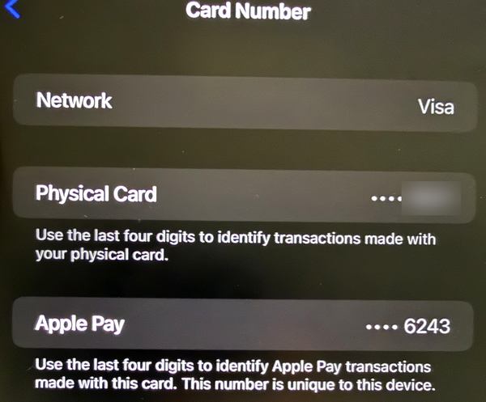

It starts at the gas pump
You pull into a gas station at night and swipe your debit card at the pump. All seems well. But someone put a little gadget in the card reader, and it just copied everything off the magnetic stripe on your card. A week later you see charges on your account from a store you haven’t ever been to.
Now imagine the same gas station, but this time you bring your phone up to the reader. The skimmer’s still there. It just doesn’t get anything useful.
That difference comes down to what your card actually sends to the store. It’s one of my favorite examples of security just working, without you having to think about it. It’s also an example of how scammers adapt when one of their methods stops working.
Finding a scamming card shimmer at gas station
in interestingasfuck
What a swipe gives away
The black stripe on the back of your card stores your card number and some other information. The issue is that this data is static, meaning that it is the same every time you swipe. If someone makes one copy, they can put it on a blank card and it works like yours. That’s really all a skimmer does.
A lot of this was solved by chip cards. When you use a chip, it creates a new code for that purchase that can only be used once, so a stolen code is essentially a password that’s now out of date. The stripe is going the way of the dinosaur too. Mastercard plans to have it off its cards by 2033.
What happens when you tap
Tapping your phone takes the next step with something called tokenization. Adding a card to Apple Pay or Google Wallet doesn’t mean your bank stores your actual card number on your phone. It creates a surrogate number just for that device. Apple refers to it as a Device Account Number, and it is housed in a chip known as the Secure Element, separate from the rest of the phone’s software.

But what does your phone send when you tap it? Only two things. The first is that stand-in number. The second is a security code valid only for that one purchase. Your actual card number is never transmitted and never shared with Apple. The card network is what connects the token to your actual card. Your bank checks that the one-off code is valid and was generated by your phone before allowing the payment.
I think of the token as a nickname for your card. The store gets the nickname, but only the card network and your bank know which card it actually is. The one-time code is kind of like a password that expires the moment you use it. So let’s say a hacker got into the store’s systems and got both. All they’d have is a useless nickname and an expired password. Your bank can also turn off the token for a magnetic stripe card, by phone, and on websites. Anywhere other than your phone, it’s pretty much useless.
There are a few more layers of protection too. Tap-to-pay uses NFC, which needs your phone to be quite close to the reader for it to function. And Apple Pay won’t send anything until you confirm it’s you with Face ID, Touch ID or your passcode.
Where it breaks
So if tapping is so safe, how do scammers still get around it? They’ve actually pretty much quit trying to steal your number at the register. Now they go after another moment, when your card is added to a phone. This is what it could look like.
You get a text saying you owe a toll or that a package failed to be delivered. Then they give you a link that takes you to a site that looks real and asks for your card info to pay a small fee. The site tells you your bank needs to verify the payment and asks you for the code it just texted you, but that code isn’t for a payment. Your bank sent it because the scammers are adding your card to Apple Pay or Google Wallet on a phone they control. When you type it in, your card is on their phone, complete with a real token and real one-time codes.
This actually happens on a huge scale. Researchers have tied some of these instances to China-based groups known as the Smishing Triad (smishing is phishing over text). One security firm found that a single phishing kit had collected 108,044 cards from 31 websites. The groups load several stolen cards onto one phone and sell those phones in bulk to people who use them for online and tap-to-pay purchases. Some even use apps that relay a tap over the internet, so a stolen wallet on a phone in China can pay at a register somewhere else. In November 2025, Google filed a lawsuit against the people behind one of these kits, called Lighthouse.
From a security point of view, this is a really interesting weak spot. Tokenization checks that a payment came from the device the card was added to. It has no way of knowing that the device belongs to a scammer. So the weakest step isn’t the tap at all. It’s enrollment, and that step usually involves a one-time code via text. It’s the same social engineering idea from my Zelle post. The scammers don’t hack security. They get you to sign off on it for them.
So does tap-to-pay really hide your card number? It does. When you tap, the store never sees your real number, and it can’t reuse what it sees. It’s actually safer than swiping. But that protection only extends to the payment itself. If someone takes your card and puts it on their phone, the system thinks they’re you.
Stay safe
- Tap or insert your card at gas pumps and ATMs whenever possible instead of swiping.
- Read the accompanying text of any single-use code. If it says the code is to add your card to Apple Pay or Google Wallet and you didn’t do that, don’t give it out and call your bank.
- No toll company, delivery service or online store should ever ask you for the code your bank texted you to take a payment.
- Watch for alerts about adding your card to a new wallet. If you didn’t add it, call your bank immediately.
- Have a passcode on your phone. It’s what keeps your wallet safe if your phone is lost or stolen.
Bottom line: Tap-to-pay hides your card number from the store. The real danger is someone getting your card onto their phone. Never give out a code you didn’t ask for.
Sources
- Apple Support: Apple Pay security and privacy overview
- Bankrate: Mastercard to phase out magnetic stripe cards
- Yahoo Finance: Your Mastercard credit card is undergoing one of the biggest changes in years
- Krebs on Security: China-based SMS phishing triad pivots to banks
- Mobile ID World: Chinese cybercrime groups exploit mobile wallet systems
- The Record: Google files lawsuit to disrupt massive “Lighthouse” smishing scheme
This post is for general education, not legal or financial advice.